Fruitilicious! An exponential numbers game inspired by Cookie Clicker
Cookie Clicker was one of my childhood favorite games. It came naturally to me then to create a spin-off game based on one of the
most original idle-clicker style games. Cookie Clicker involves idly clicking a cookie to gain more cookies, of which you can spend cookies to buy upgrades
and therefore, get more cookies per click and so on and so forth.My innovation to this gameplay loop came because I didn't understand why you spent cookies to buy upgrades, wouldn't you buy upgrades in cash?
This idea in mind, I added a "Stock Market" of sorts, of which the user can choose when to buy and sell their goods and have the option to strategize over the best time to sell in order
to buy the most upgrades.My innovation to this gameplay loop came because I didn't understand why you spent cookies to buy upgrades, wouldn't you buy upgrades in cash?
This idea in mind, I added a "Stock Market" of sorts, of which the user can choose when to buy and sell their goods and have the option to strategize over the best time to sell in order
to buy the most upgrades. Read more to read about the development cycle of this game, therein the struggles and triumphs I achieved.
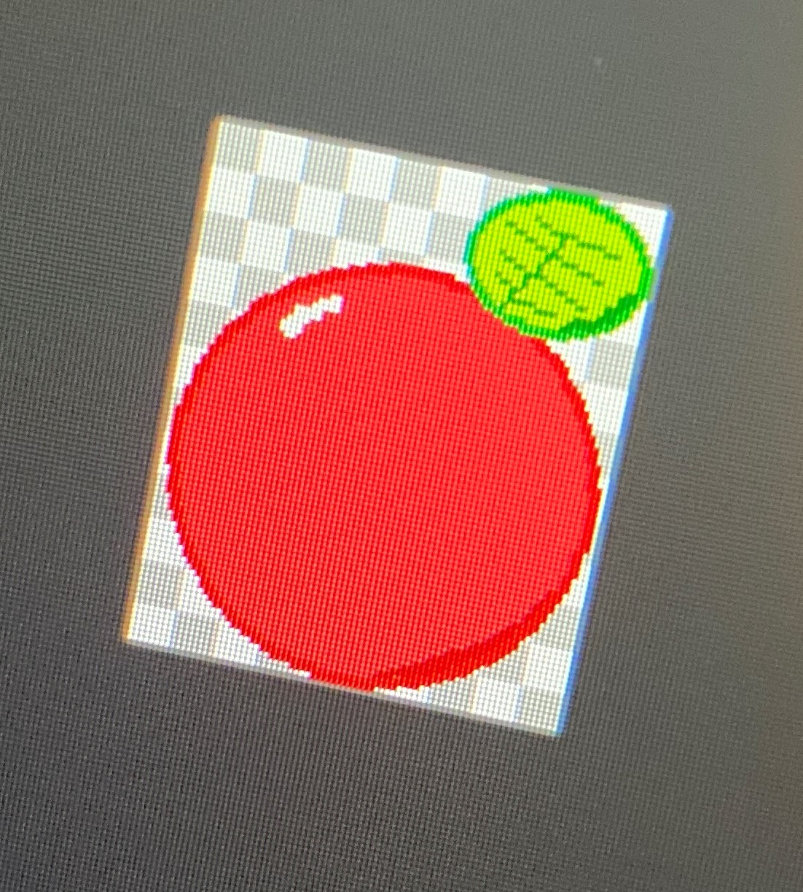
The first thing that had to be created was the artwork for the game. I initially went with the fruit theme
in order to be a comical contrast to Cookie Clicker. I fired up Mircosoft Paint and drew some simple sprites. Shown is the first sprite to be used
within the game.Something to note was that I had prior coding experience before starting this project. I had a relativley good understanding
of C# and had taken Java courses while in highschool. I chose the game engine Unity to be the foundation of this project because I had worked previously
in Unity to make other miniture games. This was different from the game engine that I had used to make the other projects listed below, which was based on
Processing, which employed Java to create its derivatives. Java, although a solid coding language, would be a detriment for my purposes.One benefit of using Unity as well was that my Collegiate status at Texas A&M University allowd me to obtain the
Pro version rather than the Free version, as Unity offers free plans for college students. This allowd for more complex developments, but I wouldn't employ
these benefits until an update of the game on the Apple AppStore.I origionally intended the game to be exclusive to the computer, but wanted to be more ambitious than this. Ironically, the game
became only available on the Apple AppStore. Therefore, the first working build has a horizontal display and would change towards a vertical one by the second build.
Within this build, the only thing you could do was click on the apple to get more apples, andddd that's it. There was also scrolling text, but that would change
later towards a static but dynamically changing text.'The groundwork set during this period would become a serious detriment later in the development cycle. Code would have been written,
and then rewritten less than an hour later over me still determing the direction I wanted the game to head in. In hindsight, a development plan would have prevented this
from happening, and I will develop one in updates to this game and create development plans for future projects.This period was also very useful in getting more familar within the Unity Engine. Dropping objects into the scene was harder
than it initally seemed, because buttons would react to mouse clicks and not to the spacebar, so code had to be written to accomodate for this (Which would change as the
platform changed to iOS!)One final note for this build was that the game did not have save-states. Once the session had closed, all apples collected would
dissapear and start back at 0 once the session was started again. This was good for initally builds, but again, would make issues within coding not be noticed until late int the
development cycle.The second build introdued interactions between the user and the game through iOS. I loved the idea of creating the game for the phone,
but an issue I didn't forsee was that Apple required development for phones to be on an Apple Product! This was a major setback, as I have run Windows on my computer and I had
grown fond to the software since the beginning, and had no intention of switching. Devlopment for the game would have to continue on a continuous 'attempt-and-fix' cycle for
iOS, which equivilated to me writing code 'in the dark' for iOS. My workaround for this was to continue development for Windows and iOS.Therefore, this build introduced tons of features that were mainly tailored for iOS but not necessarily for Windows, such as having 'click-and-drag'
required for switching between screens in-game and the now vertical aspect ratio. As such, The User Interface was updated to better accomodate the screen siz. Although, the scrolling feature wasn't present in this build due to multiple issues with determing whther a press
was from a Windows computer, or an iPhone. So, an upgrade button was just placed at the bottom that served as 'upgrading' ammount of apples you obtained per click.The Third build employed usage of the screen scrolling feature mentioned earilier. Switching between screens seemed appropiate, and from here on
features would be seperated into the screens (Such as Upgrading or Selling Fruit!). The 'Market' screen introduced the crude stock market, with prices randomley going up and
down to simulate a 'volatile' market for fruits. This allowed the user to choose when to sell their fruits in order to maximize their profits, an integral part of the gameplay cycle.The upgrade screen now offered a variety of upgrades that could be bought, with each upgrade costing more and more following an exponential curve. This was a lot of trial
and error to find an exponential curve that wasn't too difficult initially to make progressing within the game feel tiresome, or too easy to make progressing feel unrewarded.'By this point, a good portion of the game would be built upon this prototype build. This build was a sort of proof of concept in determing whether the game
would be enjoyable and what the gameplay cycle would feel like over time. This is key as reaching this point early on helped save hundreds of hours in art design and graphics on a game that could've been
unenjoyable from the beginning. The gameplay cycle wasn't perfect, but I enjoyed it for providing that nostalgic feeling associated with cookie clickerThe fourth build therefore focused primarily on developing the graphics of the game to look cleaner compared to previous builds. A majority of
the initial alpha for the game had been completed, so making the game pleasing to look at became the focus for this build. I first had to find a color pallete that seemed colorful enough to
match the childish fun theme surrounding the gameplay. I went with a blend between the bright blue, green, and burnt orange. These color 'technically' complimented each other, but having just a solid
color compliment each other still felt boring. To counter this, a sunburst sprite overlayed with the color scheme provided that pop that I figured would draw the user in.Along with this build were features that were battle-tested to see if they promoted the core gameplay cycle without distracting the user too much from the gameplay. For example,
a research panel was added to allow more passive benefits for the game, such as collecting apples while the user wasn't playing the game. A feature that was initally planned but cut during this period was an
achievement panel but was cut for not having enough of an impact on the gameplay. I may revisit this feature but it wouldn't effect gameplay enough to be worthwhile.'So far, I keep referencing that the game was developed for the iPhone. This was on purpsoe as the game's aspect ratio would be differnt on an ipad for on the
multitude of ratios that associate Android devices. This is an issue that still plagues the game today, and is something that I'm working on currently in order to allow for the game to be played other devices than the iPhone.
The game can still be played on iPads, but is zoomed out and filled with blank space rather than proper formatting.Finally, a save-feature was finally implemented into the game. A file type dubbed a 'chron' file would be created on session start, with a unique
id associated to the user's device. The two issues assoiated with this was that the game couldn't be cross device, meaning a save couldn't be transfered between two phones that the user owned. Another was if the device
was destroyed or lost, the save couldn't be recovered. It was for this reason that the monetization of the game came strictly from ads. If the user had purchased an item in-game, I didn't have a concrete way of ensuring this.'Unforutnatley, after this build, videos/pictures of the game's development cycle went sparse to none. But, in essence, UI would be changed radicall from previous builds
to have a better flow that followed the core gameplay. Speaking of which, one final core gameplay feature was added at this point. I dubbed this the 'Prestiege' system, which allowed the user to reset their progress thus far
in exchange for major benefits, allowing the user to feel a sense of progression and to combat the exponential curve that followed the gameChallenges were then created that must be beaten in order to prestiege. A balancing act was tried and tested then to ensure that challenges weren't too easy or too difficult
with the exponential cuve that followed the game.The game would be released at this point, after significant combat with unexpected bugs during gameplay being found by beta testers (Huge thanks to Philip Wooten and Grant Hightower!)
An update would follow that now included a cloud-save system that was possible due to the Pro benetifts that came with the Unity Engine. Other than this, the game was seen as completed. You can download the game by clicking on the
'Apps' button on the navigation bar at the top.However, the game is still somewhat in development for future updates. The Second major update, 1.2, would feature music and sound effects, another core gameplay feature, and the aspect ratio would fits
for all devices. This is still being worked on, and a release date is expected to be around May 1st. Thanks for reading!
TikTok API for Data Science, Refered to as MANGO (Discontinued)
This project, although discontinued, was completed.My intentions for this project was to make a game out of the data that TikTok already collects on the user when they use the app.
Information that was gathered by TikTok that I collected was already publicly available, no information that I gathered couldn't already be obtained by using the service.I want to make it clear that I did not create the API that connected my computer to the TikTok service. I employed the API created by the
brilliant David Teather, you can find his work here: LinkWhat made this project so enjoyable was the efficiency of Teather's API. I could gather 100's of data points spaning multitudes of videos in mere minutes.
Part of the code that I wrote with this project even including the algorithim to recognize videos or 'stitches' of videos, so douple-dipping of data wouldn't occur.'That being said, the reason for the discontinuation of this project was that my original goals could no longer be fulfilled. As I had mentioned prevously, My goal was to make
a game around the data associated with TikTok videos. Examples could be guessing which video out of 3 had the most likes, comments, views. Or which video was most likely to become
popular within the next week. I had planned to release this game on the Apple Appstore and Googleplay Appstore. When I had started this project in Jaunary of 2022, TikTok's Terms of
Service allowed me to pull information, but have since updated it to no longer allow a user to use automated scripts to aquire sensitive information, or reverse engineer,
disassemble, or create any derivative products based on TikTok. The last note is what sealed the projects fate, but the first comment is why I am choosing to discontinue the project.
I still retain the source code should TikTok's Terms of Service change in the future or privacy rights improve for users. Out of respect towards user's privacy rights and to negate any
wrong doings towards TikTok, the project is no longer in development.I will not be releasing this project to the general public for the reasons stated above. No GUI had been developed so there is not media to show.
3D Perlin Noise with Terrain Assignment
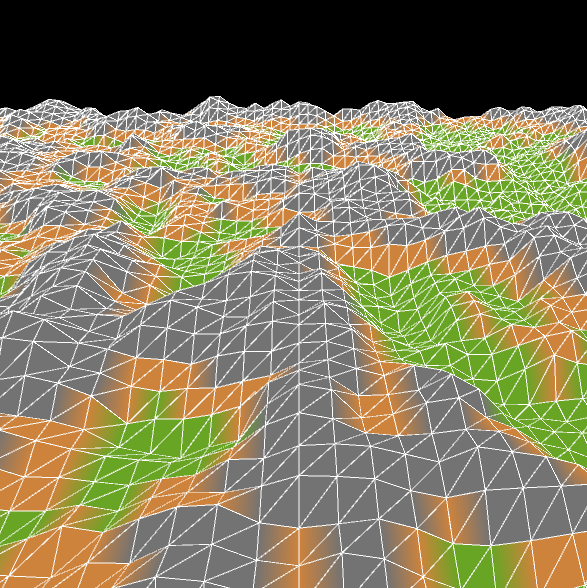
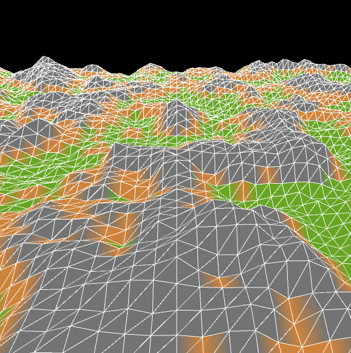
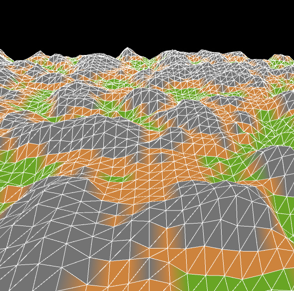
This project was inspired mainly by The Coding Train, where one of his coding chalenges was to create
3D Terrain Generation employing Perlin Noise. You can find the video where he discussed this here:
LinkSomthing that fascinated me at the time of the creation of this project (9/18/2018, 14 years old) was how a someone recreated a very basic version of Minecraft within one
week! A week! One of the tools he used was 3D Perlin Noise to achieve these ends, having terrain be specificed by the height of the points. So, my achievement here was modifying what The Coding Train had used
to create 3D Perlin noise and modified it to generate tiles based on the tile's height. While The Coding Train's program was only black and white, I modified it to add color based on the height of the tile.
Although I had originally planned to have objects placed at the tiles height depending on the tile's type (Grass, Ice, Stone, etc.), I never got around to finishing this.I consider this project complete. You can download the project and see it in action yourself if you so choose. Note that the program will only work for Windows 64 bit systems.
Space Invaders
This was mainly a school project where we were free to design a game of our choosing. I choose space invaders, mainly because it's one of my dad's favorite games. The game naturally
became one of my favorites, so I wanted to get a shot of recreating it. The game is extremely minimal. There is no score board, and there's only one level with one 'difficulty' level.I did not create the graphics, although I cannot provide where I found the graphics from (I was 14 and had no intention of displaying this project to the public at the time). I am
positive however that if you looked for the graphics, you would find them. One thing to note however was that the sound effects and were created by me, althogh they're simple 8 bit sound effects, which fits
the style of the game.I consider this project complete. You can download the project and see it in action yourself if you so choose. Note that the program will only work for Windows 64 bit systems.
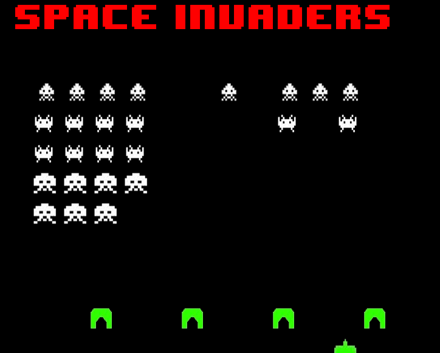
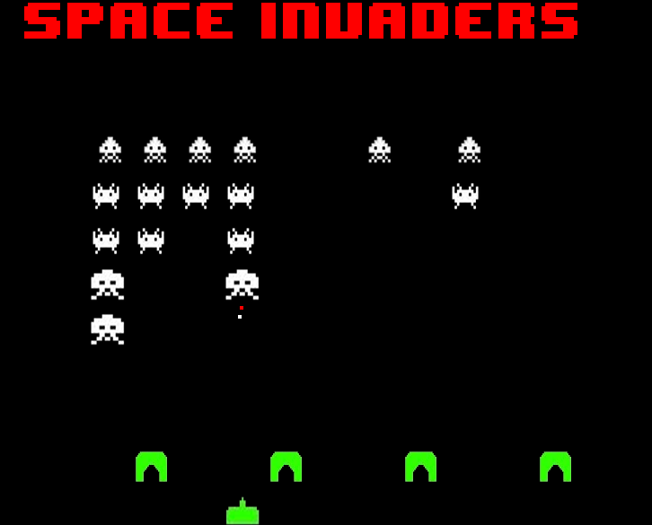
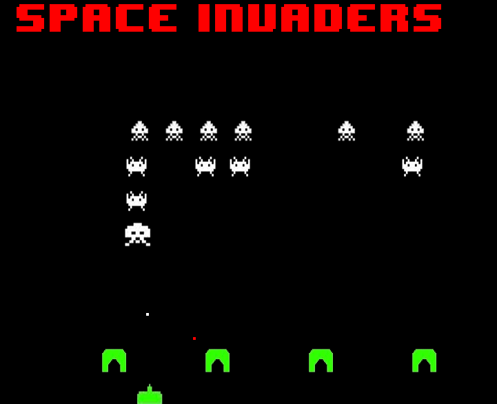
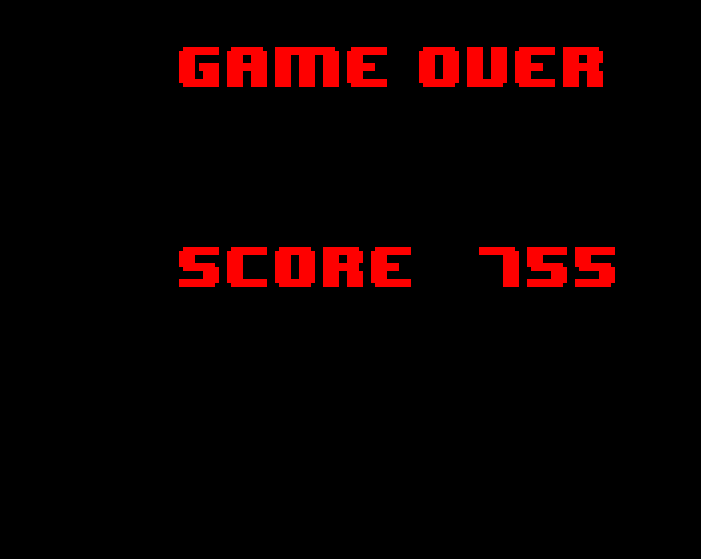
 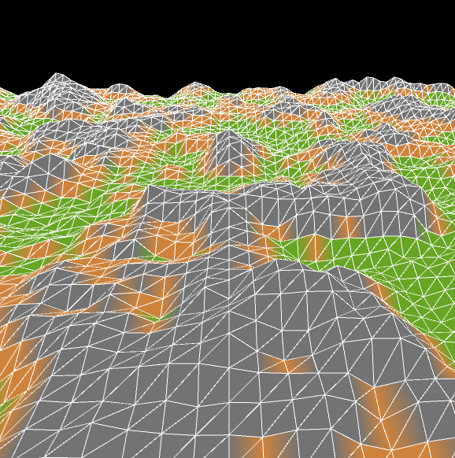
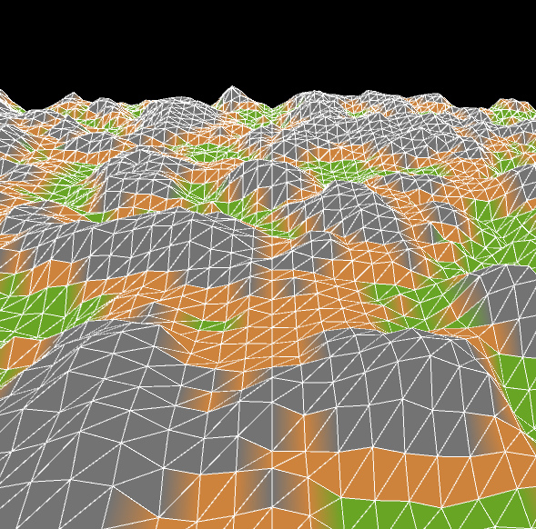
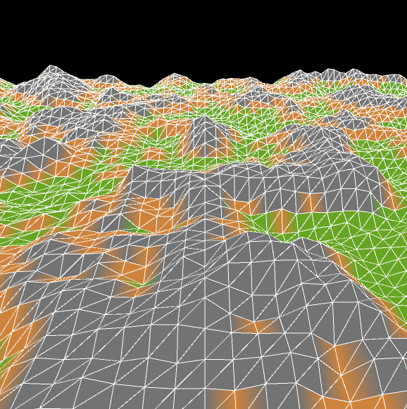
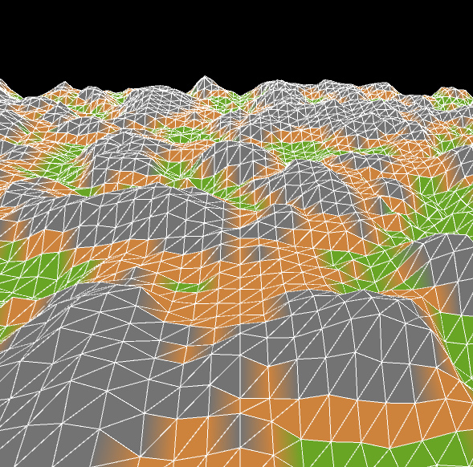